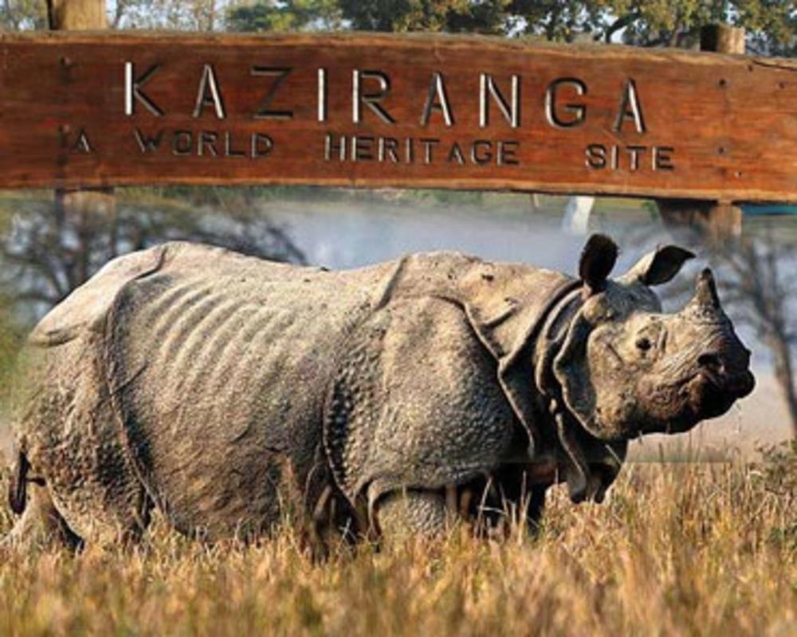
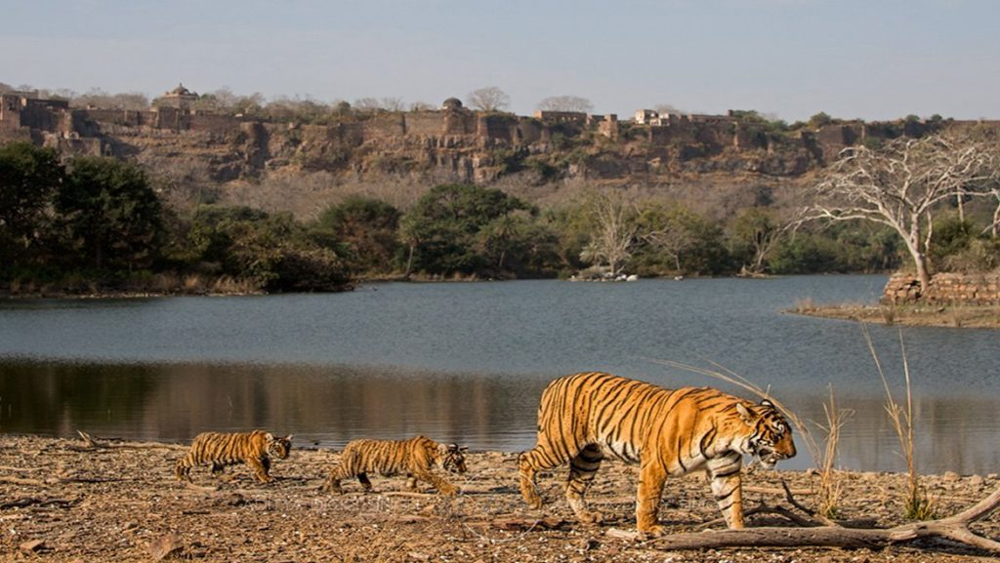
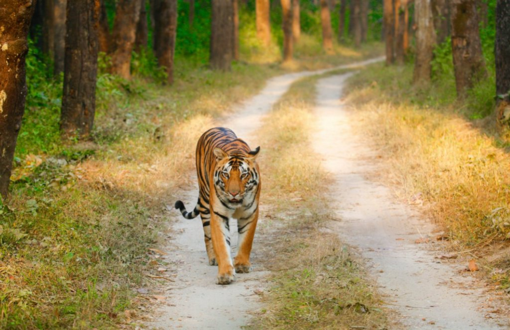
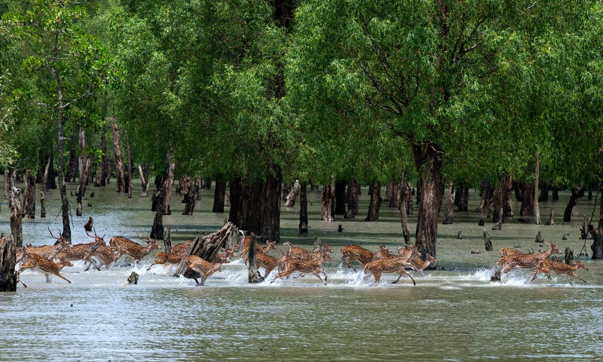
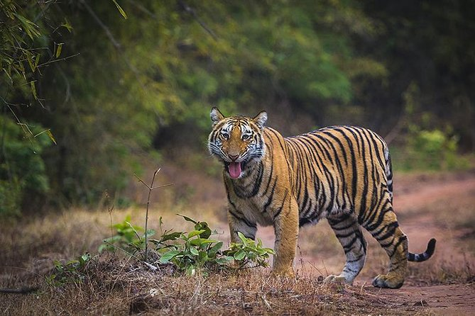
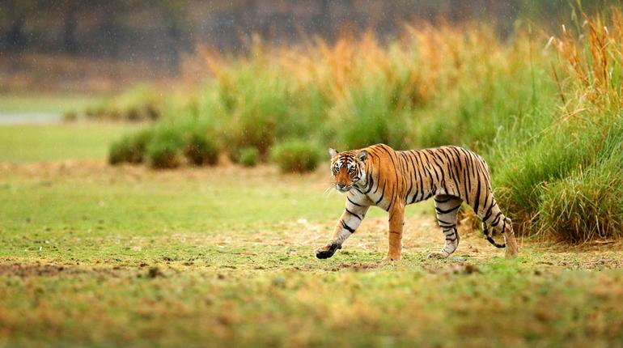

Official Blog of Ravv Self Drive Cars
HOME
ROAD TRIP
PLACE TO VISIT
THINGS TO DO
USED CARS
1. Kaziranga National Park
2. Ranthambore National Park
3. Kanha National Park
4. Sundarbans National Park
5. Bandhavgarh National Park
6. Govind Wildlife Sanctuary
7. Sariska National Park
1. Kaziranga National Park

One World Wildlife Day 2022, you must plan a road trip to Kaziranga National
Park. Covering a vast area, dotted by tall elephant grass, this is one
national park that you must not miss out on visiting. This is a World
Heritage Site where you can witness the beautiful and unique one-horned
rhinoceros. On the swamps here, you can also find wild Asiatic water
buffalo. The nearest city to this national park is Gauhati.
* Distance from Gauhati: 193 km
*
Best time to travel: November to February
*
Nearby destinations to visit: Gauhati, Shillong
*
Things to do: Elephant safari, jeep safari, bird watching, visit
Kakochang waterfall, tea estate tour, etc.
2. Ranthambore National Park

Ranthambore National Park is also one of the popular wildlife
destinations in India which is frequented by many wildlife enthusiasts. This
national park is surrounded by Chambal and Banas Rivers and has gained
popularity for housing majestic tigers. However, you will also be able to
find several other animals here such as wild boar, nilgai, leopard, hyena,
and sambar.
* Distance from Jaipur: 190.7 km
*
Best time to travel: November to February
*
Nearby destinations to visit: Trinetra Ganesh Temple,9 Ranthambore
Fort, Jogi Mahal, Hammir Palace,
* Things to do: Jungle safari
3. Kanha National Park

It is the grassy fields and bamboo forests of Kanha National Park that
inspired Rudyard Kipling to write The Jungle Book. The area is large here
and is perfect for the animals to live. From giant antlers to barasingha,
you can find several types of animals here well protected. The other animals
that you can spot here are mongoose, hyenas, peacocks, tigers, jungle fowls,
panthers, sloths, and langurs.
* Distance from Jabalpur: 129 km
*
Best time to travel: December to February
*
Nearby destinations to visit: Kanha Museum, Kawardha Palace, Mandla,
Amarkantak, Jabalpur, etc.
* Things to do: Wild safari,
Elephant safari, Night safari, Trekking, Nature walk, etc.
4. Sundarbans National Park

One of the most interesting and famous places to visit for wildlife
lovers is Sundarbans National Park. It is the largest mangrove forest in the
world that covers an area of over ten thousand kilometers. In the delta of
the Bay of Bengal, these forests are located between two countries, India
and Bangladesh. This is the home to the very popular and majestic Royal
Bengal Tiger. However, you can also find a huge population of various types
of snakes and crocodiles here.
* Distance from Kolkata: 97.8 km
*
Best time to travel: December to February
*
Nearby destinations to visit: Kolkata, Sudhanyakhali Watch Tower,
Netidhopani, Sajnekhali Bird Sanctuary
* Things to do:
Bird watching, Canopy walk, etc.
5. Bandhavgarh National Park

Bandhavgarh National Park is one of the lesser-known wildlife places
in India that once upon a time was used by the maharajas of the land for
hunting. In the present day, the area is highly protected and home to
several wild animals. Bandhavgarh has the maximum number of tigers and it is
also the breeding ground for panthers. You can even spot nilgai and deer
here.
* Distance from Jabalpur: 166 km
*
Best time to travel: November to February
*
Nearby destinations to visit: Jabalpur, Amarkantak, Kanha National
Park, etc.
* Things to do: Open jeep safari
6. Govind Wildlife Sanctuary

One of the hidden wildlife destinations that not many people know
about is Govind Wildlife Sanctuary. Covering an area of 953 sq. km, the
sanctuary is dotted by thick forests. While you can certainly spot Himalayan
black bear, musk deer, tragopan, Himalayan serow, Himalayan Monal, etc.
here, this sanctuary is not all about fauna. The snow-laden peaks here are
equally beautiful and something to witness.
* Distance from Dharkadhi: 17 km
*
Best time to travel: April to June; September to November
*
Nearby destinations to visit: Kedarnath Trek, Marinda Tal, Sankri,
Borasu Pass, etc.
* Things to do: Trekking, nature walk
7. Sariska National Park

Declared as a wildlife reserve in 1955, Sariska National Park is one of the
Tiger Reserves and parks that is frequented by wildlife lovers to get a
sight of the large cats. It is the first national park in the world that was
adopted by the royal Bengal tigers as a natural habitat. The other animals
that you can find here include jungle cats, Golden jackals, striped hyenas,
and leopards.
* Distance from Alwar: 41.6 km
*
Best time to travel: October to February
*
Nearby destinations to visit: The Sariska Palace, Siliserh Lake,
Bhangarh Fort, Kesroli Hill Fort. etc.
* Things to do: Spotting
wild animals, bird watching, trekking, etc.
click hear to go on top....